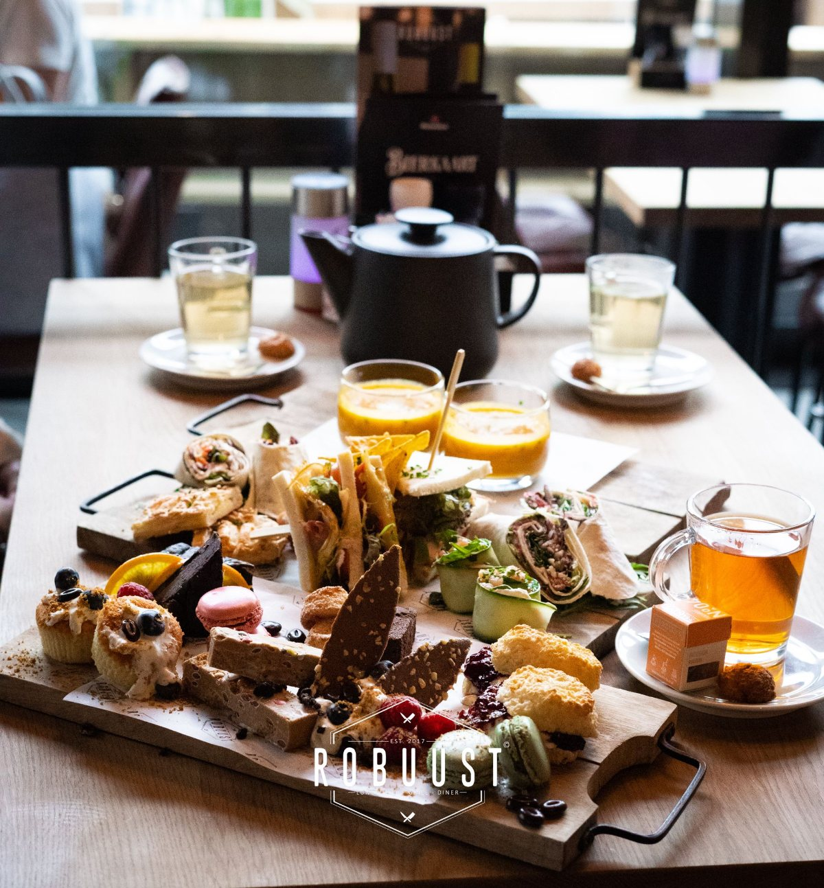

robuust high tea
Huisgemaakte sandwiches, koude en warme hapjes, verschillende zoetigheden en de keuze uit ons hele assortiment thee. Geserveerd in drie rondes: eerst een soepje, dan de hartige gerechtjes en tot slot een plank vol zoetigheden.
27,50 p.p. 30,50 met een glas prosecco bij ontvangst